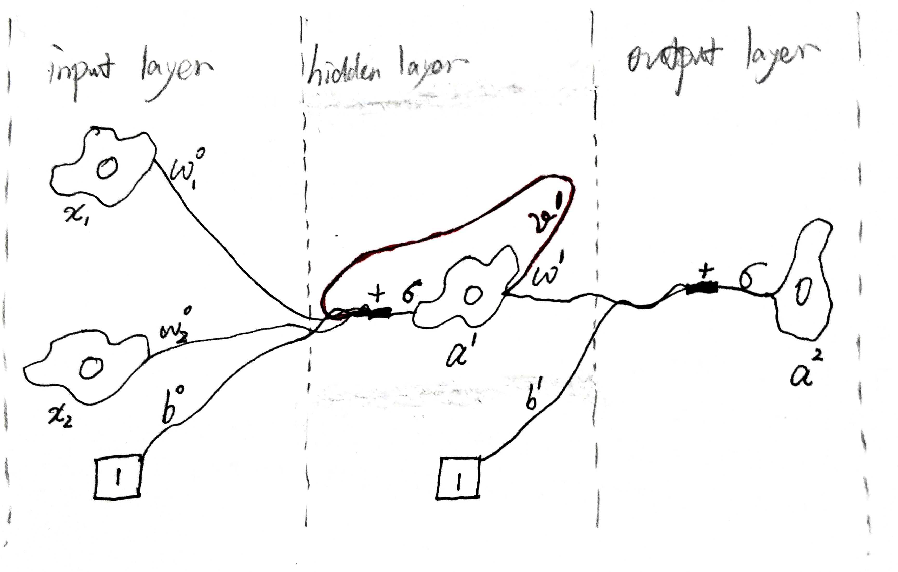
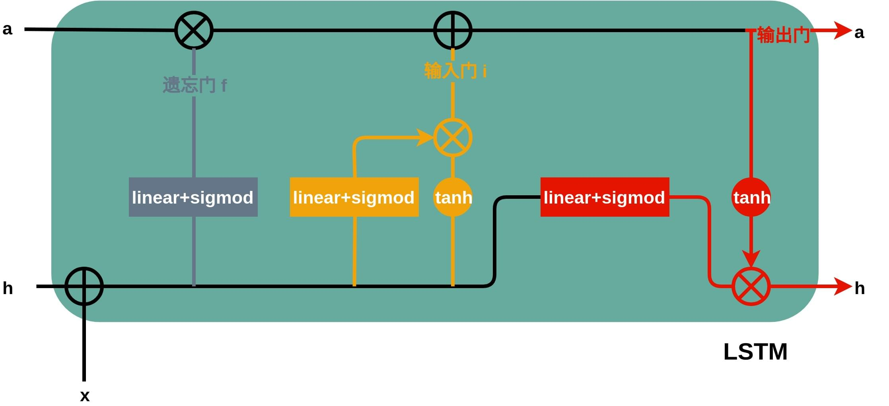

![]()
前馈神经网络 (feed-forward nueral network)
前馈神经网络一般有两种，linear perceptron network 和 RBF network，该文主要叙述前一种，其学习规则是梯度下降法，是一种无约束的最优化算法。

符号及标记
| 符号 | 含义 |
|---|---|
| $L$ | 代价函数 / 损失函数 / 最优化目标函数 |
| $w$ | “轴突”权重 |
| $z$ | 第$l$层的带权输入 $z^l=w^{l-1}a^{l-1}$ ，即从上个神经元轴突传到该神经元树突上的值 |
| $\sigma$ | 神经元的激活函数 |
| $a$ | 神经元的激活值 |
| $\delta$ | 中间变量，称为某层的误差，专用于反向传播算法 |
注 1：零层为真实数据，无前传过程，自然没有所谓的误差 $\delta^0$；因第零层的“轴突”上的权重 $w^0$ 尚未学习成功而导致的第一层的神经元的带权输入 $z^1$ 的误差，记为 $\delta^1$ 。
注 2：每层“轴突”上的权重$w$ 的行数为希望学到的模式数，列数为输入数据的维度。
注 3：做某一层的前传的时候，那一层的恒一神经元（用于模式中的偏置）才会被重新激活；当做为输出层时，该层的恒一神经元处于闭塞状态，是看不见的。当做某一层的反传的时候，是用该层神经元的误差$\delta$ 求loss对上一层“轴突”权重的偏导，而该层的恒一神经元没有所谓的误差，上一层的恒一神经元却有“轴突”权重，自然也有偏导，故只有求“轴突”权重偏导的那一层的恒一神经元会被重新激活，其余均处于闭塞状态。
学习法则
若 $y$ 与 $(x_1,\dotsb,x_m)$ 线性相关，且采样没有噪声，则直接采$m$个样本点求解线性方程就能得到参数 $\omega$ 的唯一解。为应对非线性相关的数据，采用迭代最优化（iterative optimization）的方法。
参数更新：梯度下降法
梯度是个向量，指函数变化增加最快的地方，故沿负梯度的方向便能到达函数的极小值处。
迭代优化的参数更新通式为：
$$
w(t+1) \leftarrow w(t)+\alpha v(t) \quad , \alpha > 0
$$
其中参数的确定由降低 loss 函数的方法确定。对 loss 函数进行一阶泰勒展开：
$$
L(w(t+1)) \approx L(w(t))+(w(t+1)-w(t))\nabla L(w(t)) \
= L(w(t))+ \alpha v(t)^T \nabla L(w(t))
$$
要使 $L(w(t+1))$ 最小，须使 $ v(t)^T \nabla L(w(t))$ 最小，故令 $v(t)= -\nabla L(w(t))$ 。为使得学习率在陡的地方大，缓的地方小，令 $\alpha \propto ||\nabla L(w(t))||$ ，从而得到梯度下降法的参数更新式：
$$
w(t+1) \leftarrow w(t)-\alpha_0 \nabla L(w(t))
$$
其中 $\alpha_0$ 称为 fixed learning rate，而真实的 learning rate $\alpha$ 的大小随梯度的大小变化而变化。
参数更新2：牛顿下降法
对 loss 函数进行二阶泰勒展开：
$$
L(w(t+1)) \approx L(w(t))+(w(t+1)-w(t))\nabla L(w(t))+\frac{(w(t+1)-w(t))^2}{2}\nabla^2 L(w(t)) \
= L(w(t))+F(w(t+1)-w(t))
$$
为使$L(w(t+1))$最小，令$F(w(t+1)-w(t))$达到负的最小即可，即置导数为零得：
$$
\frac{\partial F(w(t+1))-w(t))}{\partial w(t+1))-w(t)} = 0 \
=> w(t+1))-w(t) = \frac{- \nabla L(w(t))}{\nabla^2 L(w(t))}
$$
对应参数迭代更新通式，$v(t)=\frac{- \nabla L(w(t))}{\nabla^2 L(w(t))}=-H^{-1}\nabla L(w(t))$,其中H称为海森矩阵，为函数的二阶偏导方阵，可用SVD求伪逆以保证数值稳定性。
求梯度：反向传播算法
$$
\delta^l=(w^l\delta^{l+1})*\sigma'_{z^l}
\
\frac{\partial L}{\partial w^{l-1}}=\frac{1}{n}\delta^{l}(a^{l-1})^T
$$
在用矩阵编程计算梯度时，无需考虑具体矩阵乘积的细节和含义，在得到反向传播的标量表达式后，只需依照两条规则即可写出梯度的矩阵算式：
- 依据标量表达式确定算式的结构；
- 依据loss对该层参数偏导的形状调整矩阵的顺序和形状。
优化算法
GD
$$
w(t+1) \leftarrow w(t)-\alpha_0 \nabla L(w(t))
$$
Vanilla SGD
参数更新公式同GD，利用 Stochastic 的优势，以跳出局部最优点。
SGD-M
$$
M(t) = \alpha M(t-1) + （1-\alpha) \nabla L(w(t))
\
w(t) \leftarrow w(t-1) - \alpha_0 M(t)
$$
通常，$\alpha=0.9$，这意味着参数更新方向不仅由当前的梯度决定，也与此前累积的下降方向有关。这使得参数中那些梯度方向变化不大的维度可以加速更新，并减少梯度方向变化较大的维度上的更新幅度。由此产生了加速收敛和减小震荡的效果。
其本质为对梯度的滑动平均，其原理如下：

注：
动量法能够减小高曲率方向上的震荡，使得小球尽快地损失掉重力势能。窃以为，公式结合物理原则，应为（尚未测试）：
$$
v(t) = \alpha M(t-1) - \epsilon (1 + \frac{1}{|\frac{\partial L}{\partial w}|})
\
w+=v(t)
\
M(t) = \frac{v(t)}{\alpha}
$$Ilya Sutskever 在2012年提出了一种优化版本：先在历史累计方向上前进一大步，然后在新位置上计算梯度并修正方向。可以这么理解，最好犯错之后去改正它。
Adam
对于经常更新的参数，我们已经积累了大量关于它的知识，不希望被单个样本影响太大，希望学习速率慢一些；对于偶尔更新的参数，我们了解的信息太少，希望能从每个偶然出现的样本身上多学一些，即学习速率大一些。所以我们需要一个东西去度量历史更新频率。考虑到对于梯度接近于0的参数自然不怎么更新，故我们可以用二阶动量来衡量滑动窗口内的历史更新频率。参数更新式如下：
$$
g_t = \nabla L(w(t)) \
m_t = \beta_1 m_{t-1} + (1-\beta_1)g_t \
v_t = \beta_2 v_{t-1} + (1-\beta_2)g_t^2 \
w_t \leftarrow w_{t-1} - \frac{\alpha_0}{\sqrt v_t + \epsilon} m_t
$$
通常，$\beta_1=0.9,\beta_2=0.999,\epsilon=10^{-8},\alpha_0=0.001$。
由于Adam中的学习率主要是由二阶动量控制的，这就可能在训练后期引起学习率的震荡，导致模型无法收敛。通常解决方法为修改二阶动量更新公式，从而使得各参数的学习率都单调递减：
$$
v_t = \max ( \beta_2 v_{t-1} + (1-\beta_2)g_t^2, v_{t-1})
$$
但进而又会引入另一个问题：后期Adam的学习率太低，影响了有效的收敛。故通常的方法为：前期用Adam，享受Adam快速收敛的优势；后期切换到SGD，慢慢寻找最优解。
其实某种算法是否有效，主要看你的数据是否符合该算法的胃口，算法固然美好，数据才是根本。
自适应学习率
每个神经元入度的不同导致了流入不同神经元的“树突”权值的最佳学习率各不相同。当入度很大时，每个“树突”权值改变一点点，累积的改变量就很大了，很容易过量；而当入度很小时反之。所以一般采用一个全局学习率，然后根据对每个神经元各自做适当调整：
$$
w+=-\epsilon g \frac{\partial L}{\partial w}
$$
初始化局部 $g=1$ ，如果下次该权值的梯度符号不变则增加 $g+=0.05$ ，否则减小为 $g*=0.95$ 。
注意：
- 将 $g$ 限制在某个合理的范围，比如[0.1, 10] 或 [.01, 100]。
- 使用 full-batch 或很大的 mini-batch，毕竟这样保证了梯度的符号不易受 mini-batch 的采样误差影响。
- 综合自适应学习率和动量更新法，以当前梯度和当前速度的符号来决策 $g$ 的变化。
RMSProp：将梯度除以历史数量级
全局学习率之所以难选，主要是因为每个期望的最终的权值的数量级相差巨大。在 full batch 中，可以利用梯度的符号来替代权值的更新量，从而解决这个问题。RProp结合了“只用符号”和“自适应学习率”的思想，但它违反了 SGD 的中心思想（当学习率很小的时候，权值更新量其实是当前mini-batch的梯度和历史梯度的平均。举例来讲，假设某个权值在9个批次中的梯度是+0.1，在第10个批次中的梯度是-0.9，我们希望这个权值大致不变。），故不适用于 mini-batch。而RMSProp便融合了mini-batch的高效性、mini-batch间的有效平均和RProp的稳定性。
总结
- 对小数据集（10000以内）或者没有多少重复数据的大数据集，应当使用full-batch的一些优化方法，如Conjugate gradient、 LBFGS。然后试试adaptive learning rates, rprop ...，它们是为神经网络而设计的方法。
- 对含有重复数据的大数据集，应当使用mini-batch。尝试动量法SGD，rmsprop 或LeCun的最新研究成果。
常用的激活函数及其对应的 loss 函数
假设激活函数$\sigma(z)=z$，则 $L(\omega , b)=\frac{1}{n}\sum ||y- { \omega_{L-1}[\omega_{L-2}(...x)] }||_2$，而我们平常所说的loss函数是与网络结构无关的“基础loss函数”。
线性激活函数与均方差 loss 函数
$$
\sigma(z)=z
\
L=\frac{1}{2n}\sum_x||a(x)-y(x)||^2
$$
- $\delta^L=a-y$ （因为 $\sigma_z'=1$ ）；
- $\delta^l=w^l\delta^{l+1},(l=1,...,L-1)$。
sigmod 激活函数与交叉熵 loss 函数
$$
\sigma(z)=\frac{1}{1+e^{-z}}
\
L=-\frac{1}{n}\sum_x[y\ln a+(1-y)\ln (1-a)]
$$
- $\delta^L=a-y$ （因为采用交叉熵 loss，约掉了 $\sigma'(z)$ ）；
- $\delta^l=w^l\delta^{l+1}a^l(1-a^l)$ ，其中“ $*$ ”是Hadamard积。
用交叉熵而非均方差的原因是为了解决神经元饱和问题（指某些神经元可能因权重初始化不当或者确实已经学到了很成熟的地步，而处于 $\sigma'(z)$ 值很小的激活值位置，进而导致在该处的梯度几近为零的现象；而其后果是神经元激活值会维持很长一段时间的近似稳定状态，这在训练终期是代表收敛的好现象，但若是在训练初期（即误差比较大时）， loss 下降会十分缓慢，严重拖慢收敛速度）：使用交叉熵会使得采用 sigmod 激活的神经网络中的梯度表达式中的 $\sigma'(z)$ 被约掉，从而解决了神经元饱和问题。
可根据激活函数和希望的梯度形式反推得到所需的loss函数，见神经网络与深度学习（Michael Nielsen）3.1.3节。
最小化交叉熵 loss 函数等价于最大化以 sigmod 为参数的对数似然，见数学——基础 信息论
softmax 激活函数与对数似然 loss 函数（right 损失函数）
$$
\sigma(z_i)=\frac{e^{z_i}}{\sum_ie^{z_i}}
\
L=-\frac{1}{n}\sum_x\ln a_I,(a_I为真实类别对应神经元的激活值)
$$
- $\delta^L=a-y$ ；
- $\delta^l=w^l\delta^{l+1}a^l(1-a^l)$ ，其中“ $*$ ”是Hadamard积。
- 因loss只求在真实类别神经元上的偏差，而激活函数的分母中所有神经元都包含，故$\delta^L$的求解分为两部分，求解过程如下：
$$
\delta_i^L = - \frac{1}{a_I^L} \frac{\partial a_I^L}{\partial z_i^L} \
a_I = \frac{e^{z_I}}{\sum_ie^{z_i}} \
if \quad i \ne I: \frac{\partial a_I}{\partial z_i} = -a_ia_I, then \quad \delta_i^L = a_i; \
if \quad i=I: \frac{\partial a_I}{\partial z_i} = a_I(1-a_I), then \quad \delta_i^L = a_I-1; \
and, \quad y_i={^{0,i\ne I} _{1,i=I} \
so, \quad \delta^L = a-y.
$$
对该学习算法的一些理解
- 在梯度回传的过程中，$\omega$向量可能会变得非常大，则带权步长的移动只会引起在那个方向上微小（因为$w$不处于当前误差回传的路径上，再往前传才会处于，故梯度相对很小，$w$值相对很大的情况是会出现的）的变化，以致很难有效地探索各种$\omega$模式。（大分量相对不怎么移动，小分量却相对移动很大，此处相对是指与分量自身相比，故会卡在某个方向上，以致很难有效地探索。）正则化的效果是让网络倾向于学习小一点的权重，让$\omega$只负责方向，而让$b$负责激活空间的位置。
- 另一个角度是，更小的权重意味着网络的行为不会因为噪声而改变太大，一个无规范化的网络可以使用大的权重来学习包含训练数据中的噪声的大量信息的复杂模型，而规范化的网络受限于根据训练数据中常见的模式来构造相对简单的模型，能够抵抗训练数据中的噪声的影响。
- 在迭代过程中，还会出现神经元饱和问题，从梯度公式的角度想，是$\sigma'(z)$或$a$过小导致的梯度过小，从而引起学习缓慢的问题，解决方法便是构造合适的函数将梯度公式中的$\sigma'(z)$约掉；从网络的$loss$函数角度想，是寻找极低点时中途出现了原地踱步（小梯度）的情况，解决方法便是选用不同的激活函数与基础$loss$函数的搭配，从而得到形状更好的网络$loss$函数；从模式的可激活空间角度想，是样本$x$在模式$\omega$的激活空间上的分量值（带权输入）处于激活函数的平缓处（极低变化率）导致的模式$\omega$寻找进度迟缓，解决方法便是消除激活函数变化率对模式$\omega$的迭代寻找的影响。
- 对导数的理解：导数的2-范数越大，说明在该点越不稳定，或说在该点输入的波动会对网络的输出造成很大的影响，故亦可称导数为该点的不稳定度或不成熟度。即可将 $\delta$ 理解为该神经元的不成熟度。
实际应用中遇到的问题
最优化问题：更新频率与幅度究竟应该为多大
泛化问题：如何防止过拟合？数据的两种噪音
神经网络调参
第一步
首先，要保证代码的 no bug，不仅指编译和运行时不会导致 core dump，还指神经网络可以确确实实地在拟合到一个可用的模型上，一般需要做如下工作：
- 确保输入数据没有 NaN 等无效数据，防止输出为 NaN
- 确保输入做过 normalization、数据增强等数据预处理
- 确保输入数据流 shuffle
- 深入神经网络的设计（loss函数、网络权重初始化等），确保梯度爆炸、神经元断链等问题不会出现，一般用个大的batchsize和大的lr去快速跑一个结果，看是否能正常收敛
第二步
然后开始做调参工作（测试集与训练集的loss最好同时保存，以便调参）：
- 先固定batchsize为32（以装满显存为准），再将lr从1开始十倍十倍地往下降，一直降到loss震荡趋于缓和（如0.01），然后以该学习率为lr_base
- 以该lr_base去寻找收敛更快的batchsize，batchsize过小可能导致不收敛，batchsize过大可能导致收敛不到最优值，loss较高
- 在找到合适的batchsize后，以lr_base+sgd+momentum跑N多epoch
- 在loss收敛区占整个训练epoch的1/5后，选择某几个特定epoch下的模型去用0.1*lr_base继续训练，或者根据模型或任务的直觉做其他调整
优化
循环神经网络（recurrent nueral network）

其中
$$
a^1 = \sigma(W^0 x + V^1 a^1).
$$
类别
RNNs
LSTM

其中
$$
\begin{align}
a_{t} &= f \odot a_{t-1} + i, \
i &= \mathrm{linear_sigmod} (h_{t-1} + x) \odot \mathrm{tanh} (h_{t-1} + x), \
h_{t} &= \mathrm{linear_sigmod} (h_{t-1} + x) \odot \mathrm{tanh} (a_{t}),
\end{align}
$$
即，遗忘门用于确定历史中的哪些信息需要保留，输入门用于确定当前输入中的哪些信息应当被添加进来，输出门用于更新该神经元的状态（包括激活值 a 和隐藏值 h ）。